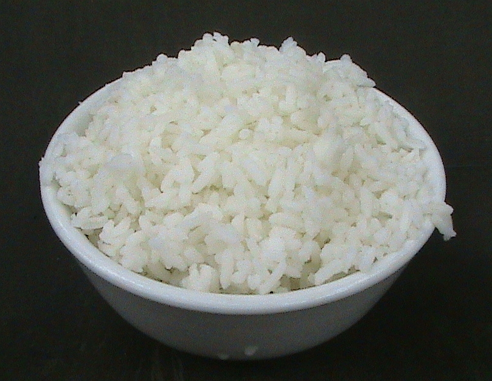

Home
White Rice Recipe

Description
Everyone loves this recipe!
Ingredients
- Long-grain White Rice (1 cup)
- Water (1.5 cups)
Steps
- Add rice and water to pot
- Bring to a boil then reduce heat to simmer
- Cover the pot with a lid
- Cook for 15 minutes without removing the lid
- Remove from heat and let sit for 10 minutes
- Fluff with fork and serve